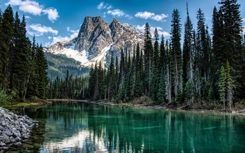

İran'ın en yüksek zirvesi ve Asya ve Orta Doğu'daki en yüksek yanardağ olan Damavand Dağı, Albanz dağının orta kısmında, Māzdarān Gölü'nün güneyinde ve Āmol kasabasında, Māzandarān bölgesinde, Tahran'ın kuzey-doğusundaki 69 km.
Farsça mitlerde ve edebi eserlerde de adı geçen, deniz seviyesinden 5610 metre yüksekliğe sahip bu volkanik kökenli dağ, havanın temiz ve güneşin olduğu zamanlarda Tahran kentlerinden görülebilmektedir. Varāmin, Qom ve ayrıca Hazar Denizi'nin güney kıyılarından.
Kışın Damāvand yüksekliğindeki sıcaklık sıfırın altındaki 60 dereceye, yazın sıfırın altındaki 1-2 derecelere ulaşır. Buradaki ortalama yağış yıllık 1400 milimetreye eşittir ve tepelerdeki yağışlar genellikle kar şeklindedir.
Damāvand’ın İran kültüründeki zirvesi, istikrar ve sertliğin yanı sıra ulusal bir sembolle de eş anlamlıdır; Yüz yıl boyunca, Damāvand Dağı'nın görüntüsü İran banknotlarının önüne ya da arkasına tekrar tekrar basıldı.
Ünlü şiir şiiri: Hey bacaklı beyaz canavar, dünyanın hey kubbesi Damavand, hemen hemen tüm İranlılar tarafından bilinir.
Eskiden beri Damāvand’ın zirvesi yerli ve yabancı profesyonel dağcıların varış noktası olmuştur.
.
